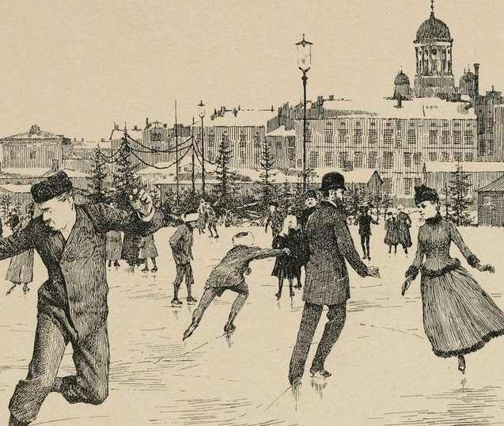
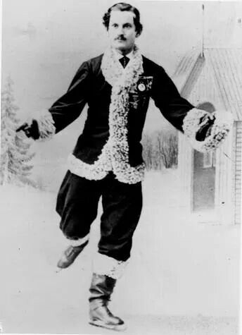
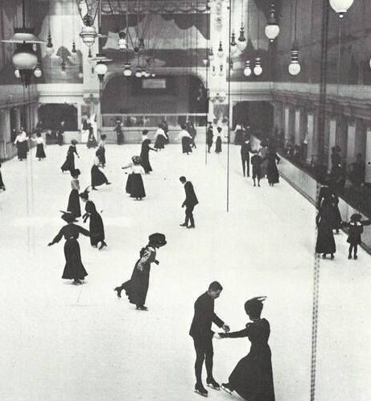
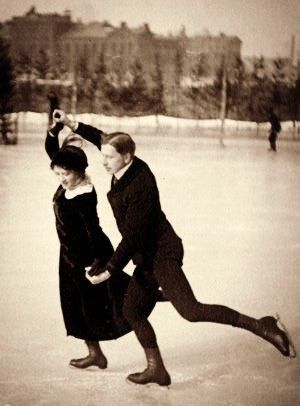

История фигурного катания
Как катание стало спортом

История фигурного катания началась задолго до появления современных коньков. Археологи находили костяные коньки, сделанные из фаланг животных, еще со времен бронзового века. Однако спортом это стало позже, когда в Голландии (XII–XIV века) научились делать железные коньки. Изначально суть состязаний была в том, чтобы вычерчивать на льду красивые фигуры, сохраняя при этом правильную позу.
Первые клубы любителей появились в Британской империи. В 1742 году в Эдинбурге разработали первые официальные правила и перечень обязательных фигур. А в 1772 году вышла книга «Трактат о катании на коньках», где описали все известные на тот момент элементы. Официально видом спорта фигурное катание признали в 1871 году на I Конгрессе конькобежцев.
Как менялось катание и появлялись элементы

Долгое время фигурное катание состояло исключительно из «обязательных фигур» – спортсмены должны были буквально вычерчивать на льду сложные геометрические узоры.
Ситуация изменилась в 1860-х годах, когда в Европу приехал американский фигурист и балетмейстер Джексон Хейнс. Он показал, что катание может быть не только точным, но и выразительным: он исполнял связки, быстрые фигуры и танцевальные движения под музыку. Его новаторский стиль, объединивший спорт и искусство, поначалу не нашел понимания в Северной Америке, но принес ему огромную славу в Европе. Это дало толчок к развитию произвольного катания.

Первые официальные соревнования в Европе прошли в Вене в 1882 году, а в 1892 году был создан Международный союз конькобежцев (ISU) для организации турниров. Первый чемпионат мира состоялся в 1896 году в Санкт-Петербурге. В нем участвовало всего четыре фигуриста, а победу одержал немец Гильберт Фукс, который, что примечательно, занимался фигурным катанием самостоятельно, без тренера. Со временем акцент сместился с рисования фигур на прыжки, вращения и шаги, которые мы видим сегодня. Важной частью истории спорта стало выступление Николая Панина-Коломенкина, который в 1908 году на Олимпийских играх в Лондоне завоевал первое в истории России олимпийское золото в фигурном катании. Позже он обобщил свой опыт, написав первый в мире учебник по этому виду спорта.
Появление разных дисциплин

Изначально соревнования проводились только среди мужчин-одиночников. Женщинам разрешили участвовать в чемпионатах мира только в 1906 году (в Давосе). Их произвольные программы сразу выделялись пластикой и музыкальностью. Женское одиночное катание быстро завоевало популярность, и уже в 1908 году на Олимпийских играх в Лондоне женщины впервые выступили в официальной программе.
Парное катание официально оформилось в 1908 году (первые соревнования прошли в Санкт-Петербурге). В том же году на Олимпиаде в Лондоне немцы Анна Хюблер и Генрих Бургер стали первыми олимпийскими чемпионами в парном катании. Главное отличие парного катания от одиночного – это элементы, которые исполняются только вдвоём: поддержки, выбросы, подкрутки и тодесы. Танцы на льду возникли в конце 1940-х в Великобритании, а в программу Олимпийских игр вошли только в 1976 году. Синхронное катание появилось в 1960-х в США как развлечение в перерывах хоккейных матчей. Официальным видом спорта его признали в 1994 году, а в программу Олимпийских игр планируют включить в 2030 году.